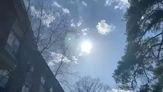

Wah Me to the Moon is the hit single released in 2022 by artist Cameron Impostor. Filmed and recorded over the course of an hour, it is the first song released by Cameron and SusFeed Video. The song has recieved wide acclaim and led to the further success of SusFeed Video's music division.

The song was recorded as a freestyle in The Schlobby at Elizabethtown College following Cameron Impostor being dared to make a music video. The song draws heavily from "Fly Me to the Moon", being considered a parody of it. The song was recorded in full Waluigi voice on an iPhone XR.
The video was recorded over about half an hour in and around The Schlobby. It consisted of various b-roll shots of Cameron doing various random tasks, including flossing, laying sexily on a table, eating an imaginary sandwich, and skipping merrily. None of the video is intended to match the lyrics directly, rather it forms a cohesive montage to the beat.
The song and video were released an hour after the initial recording to immediate success. The song was released on digital platforms with no advertising, instead relying on word-of-mouth. Though physical releases have been planned, none have surfaced as of yet.
The song has recieved widespread acclaim, launching the music division of SusFeed Video. Following songs released by the studio, such as Cameron: Insani Deus Chaos, credit this song as the reason for their success. The song has gone triple platinum worldwide, recieving 2 grammys and a 10/10 on most review sites.
{kind=link}